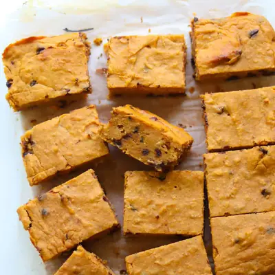

Sweet Potato Bean Blondies

Ingredients
- 1 cup (230g) cooked mashed sweet potato
- 15 ounce can white beans, rinsed and drained
- 1/4 cup peanut butter or almond butter
- 1/4 cup maple syrup
- 2 eggs
- 1 teaspoon vanilla extract
- 2/3 cup (75g) white whole wheat flour (or all purpose flour)
- 1/2 teaspoon baking powder
- 1 teaspoon cinnamon
- 1/2 cup chocolate chips (optional but highly recommend)
Steps
- Preheat the oven to 350°F (180°C). Line an 8x8-inch baking pan with parchment paper or lightly grease it.
- In blender or food processor add sweet potatoes, chickpeas, eggs, maple syrup, peanut butter, vanilla. Blend until smooth.
- Stir in the flour and baking powder, then stir just until combined. Be careful not to overmix.
- Fold in the chocolate chips, if using. Spread the batter evenly into the prepared pan.
- Bake for 25-30 minutes, or until the edges are lightly golden and a toothpick inserted into the center comes out mostly clean.
- Allow the blondies to cool completely before slicing and serving.
Recipe by Min Kwon · Kidfriendly Meals, from MJ and Hungryman. Saved here for personal use; the original has the full notes, tips and photos. Open original